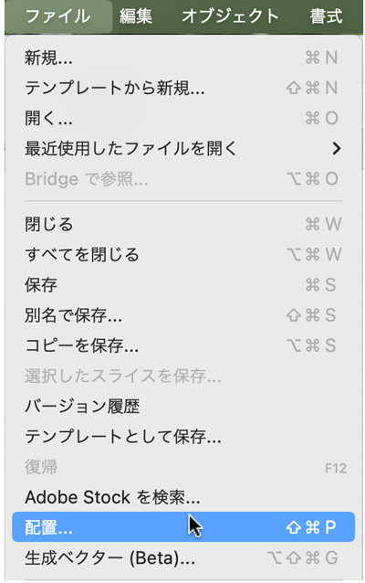
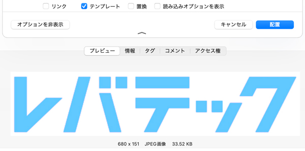
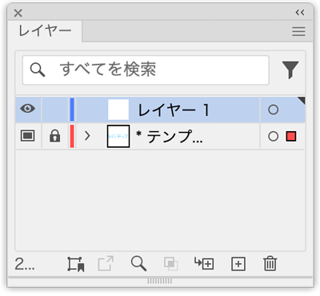
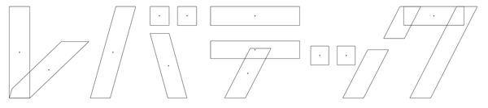
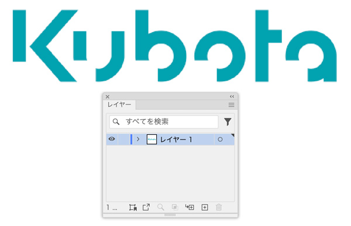
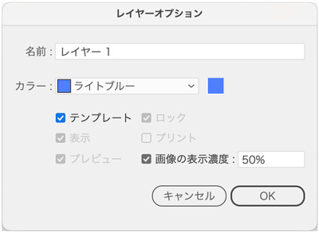
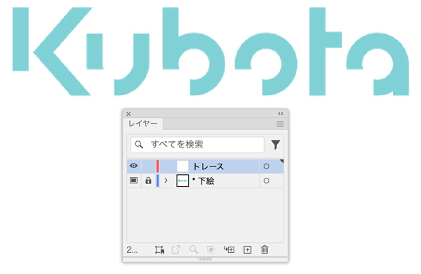
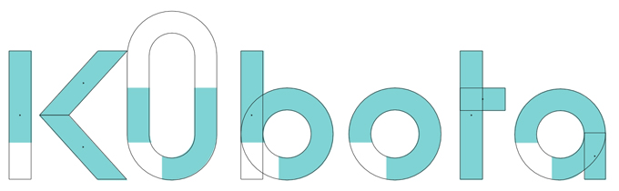
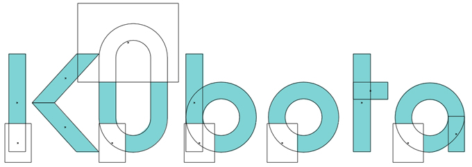
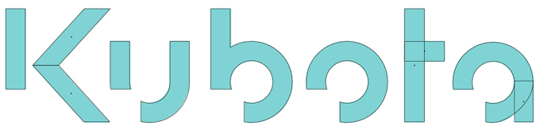

トレース
- 初心者の練習では「トレース」と呼ばれる下絵をなぞる描画の練習が、もっとも効果的な練習です
- 「ロゴ」をトレースする場合は、「規則性」を意識して作成する
template（テンプレート）
- 図形認識においてあらかじめ与えられた図形で、処理対象の図から抽出すべきものをさす（つまり、元になる図・下絵のこと）
下絵画像がある場合
1.「ファイル」メニュー → 「配置」

2.「テンプレート」のみにチェックをして「配置」
- 自動的に「テンプレートレイヤー」が作成される


「レイヤー1」でトレースを進める
- 常に、表示メニュー「アウトライン」と「プレビュー」を切り替えながら進める

幅・高さの微調整は「ダイレクト選択ツール」を使う

画像から下絵を作成
- 「ブラウザー」上の画像を「コピー&ペースト」

- 「レイヤー」のサムネイルをダブルクリック
- 「テンプレート」にチェックを付ける

新規レイヤーを作成
- トレース用の「新規レイヤー」を追加

デザインの「ユニット」から描き始める
- 常に、表示メニュー「アウトライン」と「プレビュー」を切り替えながら進める
- 「微調整」は、「ダイレクト選択ツール」で適宜おこないます

- 「パスファインダー」→「前面オブジェクトで型抜き」で不要な部分を削除

- 「b」は、「合体」後に「前面オブジェクトで型抜き」
